CS 4440 Wiki:
Wireshark Tutorial
Below is an abridged cheat sheet of Wireshark fundamentals that you'll use in this course.
This page is by no means comprehensive—we encourage you to bookmark and familiarize yourself with one of the many in-depth Wireshark tutorials on the web. Some great examples are:
Wireshark Basics
Wireshark is a graphical packet analyzer. We recommend using Wireshark for manual packet inspection to aid in developing your solutions for Project 4.
Running Wireshark Inside the VM
To run Wireshark inside your VM, launch the interactive menu (accessible via the bottom-left-most icon). Navigate to the Internet tab, and select Wireshark.
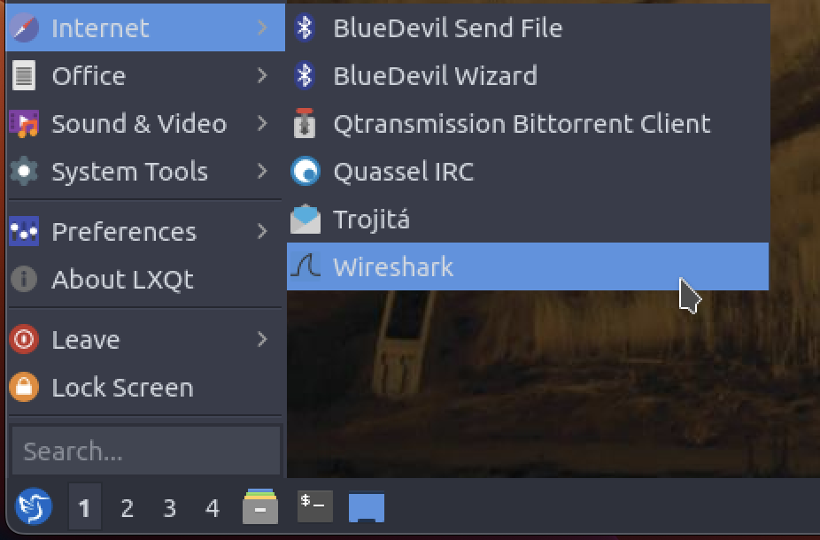
Opening Packet Capture Files
In Project 4, we provide you with a set of network packet captures (.pcap files). To start analyzing these packets with Wireshark, click on File and then Open. Select your pcap file of choice.
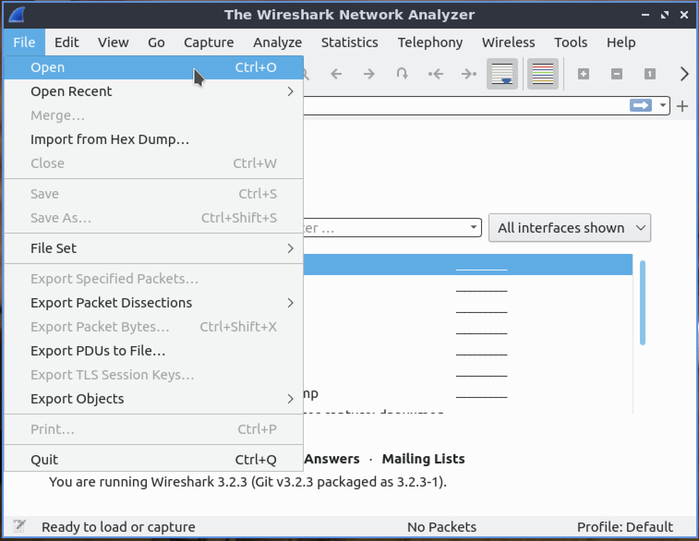
Navigating Wireshark
Main Window
After selecting a .pcap file, you will be taken to the Main Window. Here you will find three essential panes for packet analysis: the Packet List pane, the Packet Details pane, and the Packet Bytes pane.
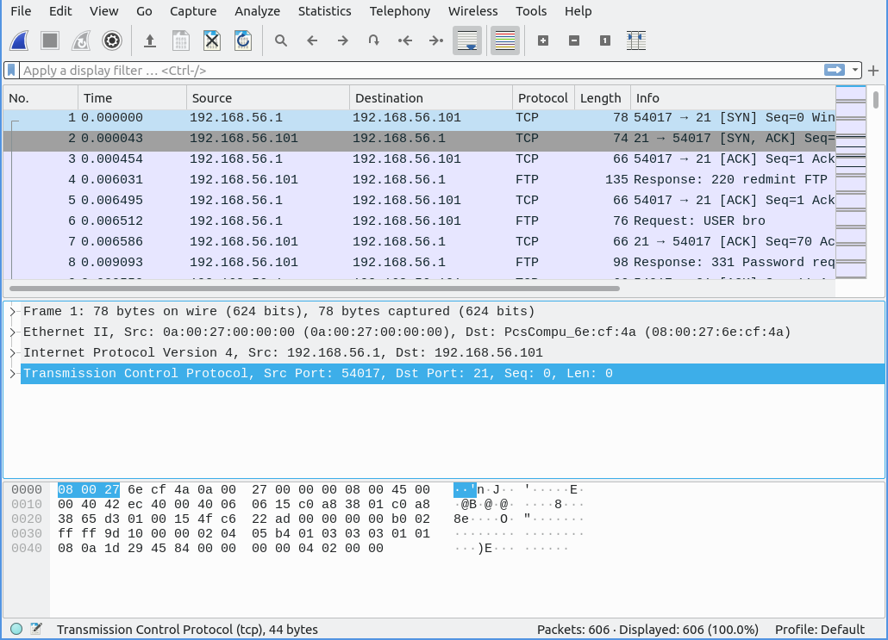
Packet List
The Packet List displays a complete list of packets captured in the selected trace. You can double-click on any packet to inspect it.
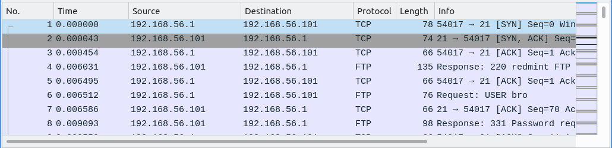
There are several important columns to check out:
- No: The order number of the packet.
- Time: The timestamp of the packet.
- Source: The source address of the packet. This is where the packet came from.
- Destination: The destination address of the packet. This is where the packet is headed.
- Protocol: The type of protocol the packet is using. Examples include TCP, HTTP, SMTP, FTP, IMAP, etc.
- Length: The length of the packet in bytes.
- Info: Additional packet info.
Packet Details
After selecting a packet, you can explore the fields and information contained in each of the packet's layers. The Packet Details pane begins with the packet's link layer frame and ends with its app layer application protocol (if applicable for the packet).
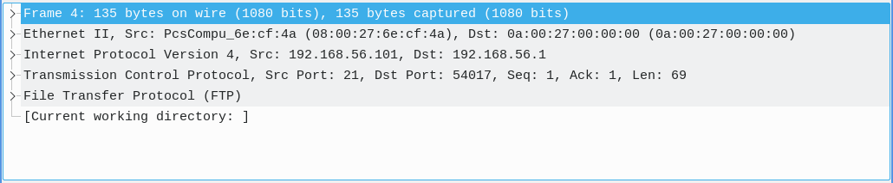
Select a layer to inspect:
- Link Layer: Includes the source and destination MAC addresses, as well as the network protocol.
- Network Layer: Includes the network protocol, source address, and destination address. These match the corresponding columns in the Packet List.
- Transport Layer: Includes the source port, destination port, and relative sequence and acknowledgment numbers which help track the order of packets in TCP connections.
- Application Layer: Includes details specific to the application protocol.
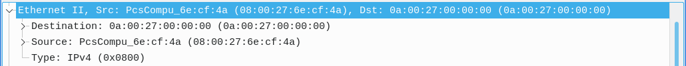
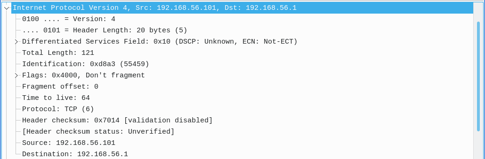
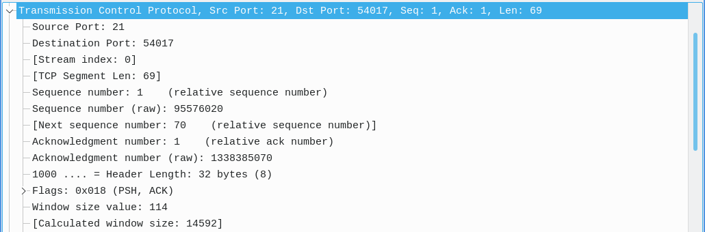
The transport layer also contains relative flags for the specific packet and protocol.
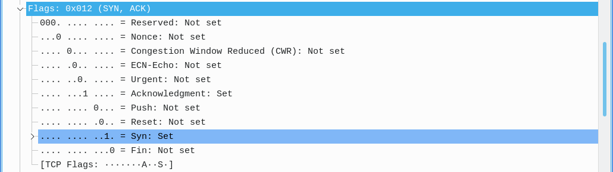
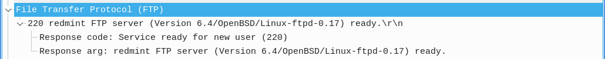
Packet Bytes
Utilize this pane to explore the complete raw packet data, including both hexadecimal values (left) and corresponding ASCII representations (right).
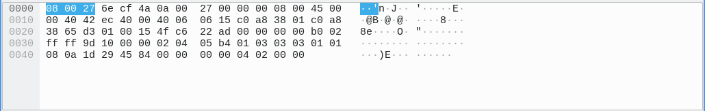
Helpful Tips & Tricks
Filter Toolbar
The Filter toolbar can help you quickly apply display filters to the Packet List.
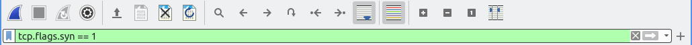
Filter Operators
eq or == : Equality comparison operator
tcp.srcport eq 21
! : Not operator
!(tcp.srcport eq 21)
and : And operator
tcp.flags.syn eq 1 and tcp.flags.ack eq 1
or : Or operator
tcp.flags.syn eq 1 or tcp.flags.ack eq 1
Filter Examples
❬protocol❭ : Filter by protocol type
ftp
ip.addr eq ❬ip❭ : Filter by IP address
ip.addr eq 192.168.56.1
ip.src eq ❬ip❭ : Filter by source IP address
ip.src eq 192.168.56.1
ip.dst eq ❬ip❭ : Filter by destination IP address
ip.dst eq 192.168.56.1
tcp.port eq ❬port number❭ : Filter by port number
tcp.port eq 54017
tcp.srcport eq ❬port number❭ : Filter by source port number
tcp.srcport eq 54017
tcp.dstport eq ❬port number❭ : Filter by destination port number
tcp.dstport eq 54017
tcp.flags.❬flag❭ eq 1 : Filter by flags
tcp.flags.syn eq 1
tcp.stream eq ❬stream number❭ : Filter by stream
tcp.stream eq 0
Follow Specific Protocol Stream
To follow a specific protocol stream/connection, right-click on the packet from the desired stream, select Follow, and choose the corresponding protocol stream you wish to view (as seen below). You may also find the Follow option under Analyze.
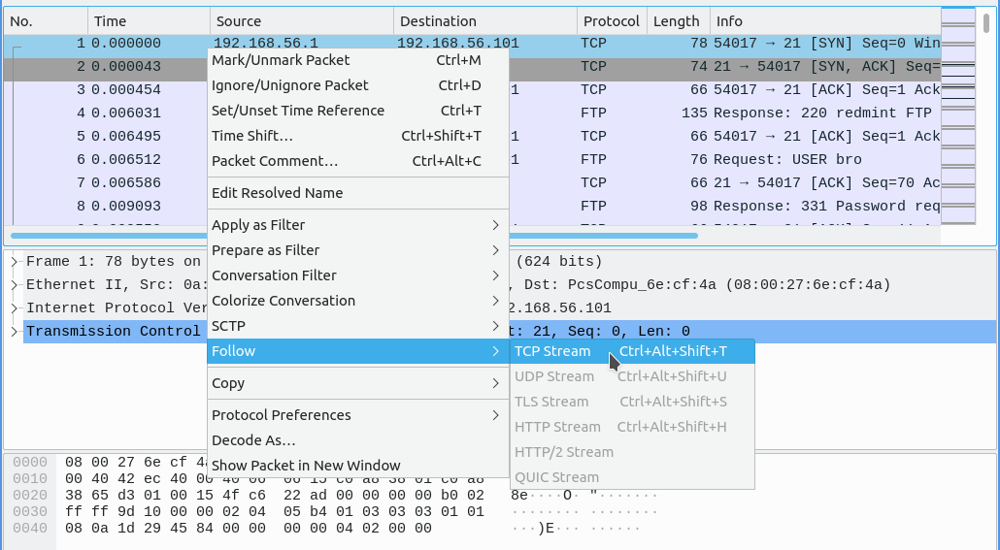
This will apply a display filter to the Packet List, showing only packets from the selected stream (as an example, it may apply a filter like tcp.stream eq ❬stream number❭). Additionally, a separate window will open displaying the stream content in a more readable format.